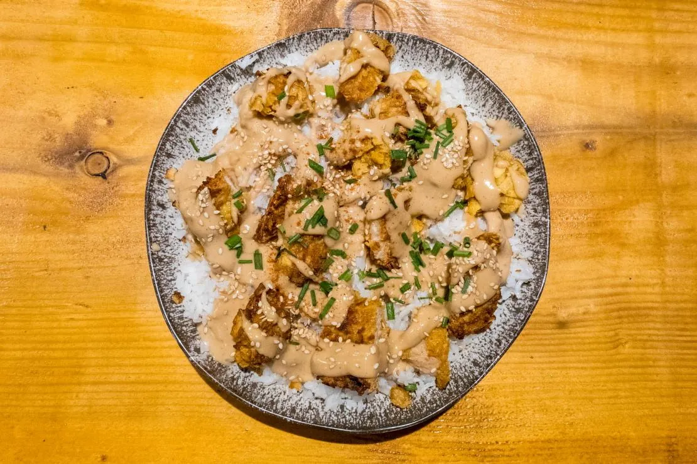

Opportunités · Nutrition & restauration
Nutrition & restauration
Un boxeur qui combat en 60 kg vit au rythme de son assiette. Restaurants, traiteurs et marques alimentaires y trouvent un terrain naturel.

Activations possibles
Ce que nous pouvons faire ensemble
- Plats ou repas fournis pour la préparation, adaptés avec l’encadrement
- Vidéo « le repas d’avant-séance » tournée chez vous
- Rencontre ou dédicace avec votre clientèle
- Mentions et identification sur les réseaux
Bénéfices attendus
Ce que votre marque y gagne
- Une image santé et performance
- Des contenus tournés dans votre établissement
- Une visibilité auprès du public havrais
- Un engagement local concret
Brothers Kitchen accompagne déjà Tidiane sur ce terrain. Nous nous engageons sur des actions, pas sur des ventes ni sur une audience garantie.
Construisons votre activation
Dites-nous ce que vous voulez accomplir : nous proposons un format et un calendrier.